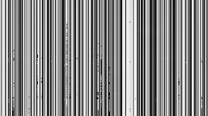
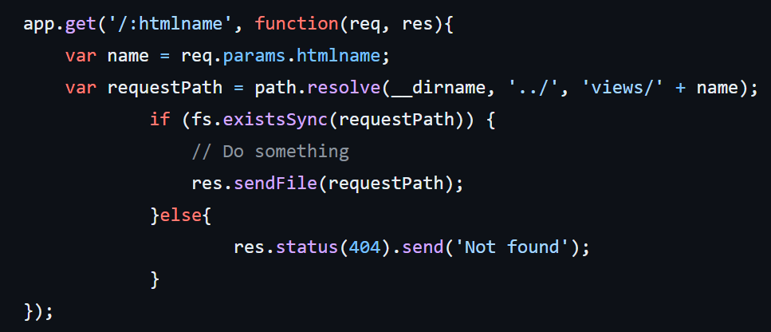

W4terCTF2024 Writeup
W4terCTF2024 Writeup
中山大学信息安全新手赛 W4terCTF 2024总结
队伍成员：
比赛情况：

有幸获得全场前五
AI
Network Reverse
网络结构长这样：
1 | |
首先，卷积和池化层只会在图像中的一个较小的局部内用某种方式抹一把，并不会比如说把W的上半部分丢到另一个地方去，不会破坏可辨识的字体形状，所以卷积和池化层可以直接当做不存在。
第一层atan()没有难度，第三层给weight求个逆即可逆向：
1 | |
上面这个函数逆向出来长这样：

感觉行之间的梯度非常小，不如来个竖直方向的锐化滤波器试试？
1 | |
啊？
Pwn
Remember It 0
签到题，自动化脚本获取flag：
1 | |
W4terCTF{THOU9h_l_Hav3_tO_SAy_g0oD8y3~}
Remember It 1
无保护，可以栈溢出。
read一次读32字节，缓冲区有10 * 32字节，按理来说只有十轮游戏就不会越界，然而并没有超过十轮退出游戏的逻辑，十轮之后可以接着下一轮，这时读到的东西就越过缓冲区了。
比较菜，没用明白pwntools，是手搓十六进制编辑器作为输入，开着gdb一点一点试出来的。payload如下：
前面是一堆1\nAAAABBBB...\n用来跳过前十轮，第十一轮读指针已经位于栈顶附近，把FEE1DEAD的地址0xB61840放在$rbp指向的位置，然后用垃圾填满32字节结束本次read，下一轮选4退出游戏，main返回，就会到达FEE1DEAD。
2048
ISTG我真的只是随便敲了一坨输入进去，然后直接弹了句sh: 1: xxxxxx: not found给我整不会了。
下面是可以稳定getshell的payload：

Web
GitZip
重新做了一遍：
漏洞大概是这里：

要把.和/都用%编码才能过，/也要编码是我没想到的，大概是针对每一层/的处理会包含一些奇怪的特殊步骤，需要把/编码掉来跳过这些步骤，让完整的路径字符串直达req.params.htmlname。
ASHBP
查看源代码，首先全局搜索 flag ，马上就找到可以直接得到 flag 的 get_flag 函数：
1 | |
同时在 init.sh 中可以看到 flag 的位置：
1 | |
flag 位置为 /tmp/flag ；
全局搜索 get_flag 找到调用该函数的地方：
1 | |
查看 rsa_decrypt 解密的逻辑：
1 | |
下载公钥 rsa_pub.pem ，RSA 加密后再 base64 加密 admin 和 /tmp/flag ，分别作为 cre 和 flag ， POST 获取 flag ：
1 | |
W4terCTF{Unl0ck_7he_sECreTs_O1_tHE_s1MPle_hOMEw0rk_SUbm1Ssion_PLATfoRM}
User Manager
1 | |
这里orderBy直接来自用户输入，而GORM文档写道：
安全 | GORM - The fantastic ORM library for Golang, aims to be developer friendly.
看起来db.Order(string)会把string直接拼在SQL语句的ORDER BY后面，于是加了个;，在后面注入了一句UPDATE，把所有用户的name改为自己的secret，下一次直接GET即可从用户的name字段拿到flag。
PNG Server
php.ini 中存在漏洞：
1 | |
这个设置会导致所请求的 .php 文件不存在就会跳到上一层的路径查找文件，比如说 http://....../.php ，那么就可以确定我们需要上传一个 php 文件
源代码中用 isImage 来判断上传文件是否为图片，这里的检查非常随便，存在漏洞:
1 | |
只需要在 php 木马前加上 GI （ 2 个字节对应 7173 ）就可以通过检查，写一个返回 flag 的 php 木马：
1 | |
然后上传该文件，文件已经被改名为了 md5 随机码，F12 找到该文件的 url ：
然后在该 url 后面加上 /.php 就可以执行该 php 木马：
W4terCTF{uPL04Ds_ar3_0UR_vlC3_RCE_WwwWWw}
Auto Unserialize
首先在盲目找线索的阶段我是用 GET 方法得到 flag 的位置的：
1 | |
直到我看到了参考资料：reference
首先可能先需要：
1 | |
找到 php.ini 加上这一行：
1 | |
构造 payload phar.phar 文件用的 phar_gen.php：
1 | |
运行脚本生成 payload phar.phar 文件，上传该文件，最后 GET 请求获取 flag ：：
1 | |
W4terCTF{uNsErl4I1z3_tH3_pH4r_ArCh1v3_TO_ReveAl_tHE_hIDdEn_tREASUrE_OF_7h3_Php_5Erver}
Just ReadObject
先贴payload：
突破口是队友查到的一个比较有名的案例：Java的优先队列序列化的时候，会把元素一个一个add进去，而add需要元素之间的比较。如果优先队列初始化时指定了比较器，会直接调用比较器的compare方法。
而jar包里有个W4terTransformingComparator，它实现了Comparator，可以作为优先队列的比较器，并且它的compare方法非常的狂野：
1 | |
大概就是会调用两个比较对象的transform方法，然后呢这个类还有个decorated字段，类型是这个类自己，上面两个transform调用完，会接着调用decorated的compare方法，相当于一个W4terTransformingComparator类型的链表。
那对于transformer呢，jar包里还有一个W4terInvokerTransformer，这个更狂野，它有这三个字段：方法名，参数类型定义列表，参数列表。这几个字段在序列化过程就可以完成加载。
而它的transform(Object obj)方法，会直接根据上面的三个参数，invoke这个obj的指定方法。
所以可以用它构造一个优先队列，指定比较器为这么一个比较器链表，每一级比较器都可以对obj用任意参数执行任意方法，并且优先队列里的元素也可以自己塞。
首先想到的是Runtime.getRuntime().exec(cmd)，由于Runtime是不可序列化的运行时context，需要用反射获取，我们的方法是Class.class.forName("java.lang.Runtime")。
也就是说优先队列里要先塞个Class.class，然后把上面的调用链拉成W4terTransformingComparator的链表即可。payload如下：
1 | |
本地开nc监听6666端口，然后上传hack.obj即可立刻收到flag。
Crypto
Smoke hints
从task.py可以得到以下信息
以下将hint1~hint5简写为
-
是随机生成的18位素数
-
-
-
-
还给了n和c
已知
化简后得到
使用下面的脚本求得x和y的值
1 | |
根据
得到
得到的q有两个解,仅保留整数解,然后根据得到p
现在得到了pq, 只需要e就能求得私钥d
因为题目没有直接提供e, 所以这里需要亿点点枚举
已知e是一个36位的素数, 枚举时使用getPrime()获得
它需要满足以下条件
GCD(e, (p - 1) * (q - 1)) == 1 and e < (p-1)*(q-1)( reduce(lambda x, y: x * y, range(1, h1 - 1)) * e) % h1 == h2(用到hint1和hint2)h4 == d % (2 ** (d.bit_length() // 4))(用到hint4)
最终代码如下
1 | |
开 8 个线程运行一晚上, 成功枚举到正确的e, 并得到d
使用下面的脚本, 根据私钥解密密文, 得到flag
1 | |
W4terCTF{W47cH_oUT_7He_Smok3_hIn75_1ROM_wll5oN}
Wish
查看源代码，看到确定抽取结果的逻辑：
1 | |
发现是利用 time 作为伪随机数序列的初始化种子，要想抽出 flag ，需要 probability 尽可能地大，那么 index 只能取 1 ，abs(random.randint(0, 1919810) - 114514) 的值只能为 0 或 1 ，所以据此爆破出一个可行的 time ：
1 | |
得到唯一符合目标的结果：time=20544 ，然后就是真的抽 flag ：
1 | |
W4terCTF{Crack_insteal_of_wish_the_seed_d0ab21251107}
即使这样还抽了十几次才出 flag , 好黑的池子！
Misc
Sign In
排行榜
broken.mp4
按照 record_1.mp4 的指引,找到了文章链接
https://blog.csdn.net/NDASH/article/details/136151418
按照文章指引, 去 https://github.com/anthwlock/untrunc/releases/tag/latest 下载所需的软件, 选择untrunc_x64
运行untrunc-gui, reference file 选 record_1.mp4 , truncated file 选 record_2.mp4
这样就能得到 record_2.mp4 的修复版, 在视频结尾能找到flag
W4terCTF{L1fe_is_5h0rT_so_i_Us3_MKV_248DF3C}
Shuffle Puts
启动容器,从浏览器访问,可以下载一个文件meow
执行下面的命令查看文件中所有字符串
1 | |
在输出中可以找到flag
W4terCTF{sHUFF1e_5hufF1e_FLA6_MEOWmeOWm30W}
Revenge of Vigenere
这题的加密是维吉尼亚密码的一个变种
连接容器后，只能获得加密后的密文
解决思路是如果知道原文的一个片段，而且知道完整的密文，可以尝试倒推KEY。
原文中存在W4terCTF是确定的，可以据此倒退KEY
运行下面的代码，根据已知的明文W4terCTF和密文Q4doySZB , 尝试推出密钥的其中连续7位
1 | |
运行结果如下，为密钥其中连续七位可能的取值，每一位可能会出现多种取值，所以有些行有两个字母
1 | |
然后，利用下面的代码，用部分密钥尝试还原出原文
因为只知道密钥的一部分，所以只能还原原文的一些片段。具体的操作为，考虑到密钥的长度在10和20之间，枚举密钥的长度，对于每个枚举，根据Q4doySZB在密文中的位置推算已知密钥片段在密钥中的位置
另外，考虑到密钥已知部分的每一位都可能有多种取值，还需要用回溯法枚举所有可能的密钥片段，可能性只有16种，数量不是很大
1 | |
运行后的输出比较长，需要人工筛选出合理的，即在里面找到一篇文章，已完全解密的单词都是合法的单词
可以发现，密钥长度为13时，大多数已解密的单词都是合法的
密钥为 ??KOWJHOG???? 时解密效果最好，结果为：
1 | |
可以大胆猜测，其中的Howe???, ???s原文是However, this，重复上面的操作，尝试逆推出密钥的另一部分
以下可以复用上面的代码，可以推测更长的密钥片段：
1 | |
然后用更长的密钥片段尝试解密原文，筛选出其中有效的如下
密钥为??KOWJHOGWPG?
1 | |
继续重复上面的操作1-2次，得到真正的密钥和原文
密钥BYKOWJHOGWPGG
1 | |
拿到flag
W4terCTF{bEneATH_Th3_mASk_vIG3N3RE_5TRlK3S_84Ck_WiTH_v3N934nc3}
Spam 2024
下载得到一篇很长的垃圾邮件
参考资料：https://forum.rtsec.cn/d/116-gong-fang-shi-jie-crypto-ji-chu-ti-mu-cryptola-ji-you-jian
使用https://www.spammimic.com/，Decode正文部分，得到
1 | |
From HEX
1 | |
逗号换成\u
1 | |
把这个放到https://www.ifreesite.com/unicode/，得到
1 | |
使用https://aghorler.github.io/emoji-aes/
key = 🔑, 得到
1 | |
进行base64解码
做异或操作，可以猜测开头就是W4
1 | |
得到:
W4terCTF{H@V3_fuN_w1TH_yOUr_F!rSt_5pAM_eMa!I_IN_2024}
GZGPT
这里漏出鸡脚了：
于是分析每一行的末尾：
1 | |
1 | |
可以看到有一些行的末尾有且仅有8个这种不可见字符，不是所有行都有，但是经验证，这样的行的数量每次都是恒定的。
八位，两种字符，一种当0一种当1试了试：
1 | |
1 | |
Priv Escape
首先找 flag ，在 /tmp/flag 找到了，但是没权限读！然后还发现这个文件的 owner 居然不是 root ，而是 r00t （什么高仿 root），这或许就意味着不需要 root 权限也能得到 flag 。
find 查找和 r00t 用户有关的所有文件、目录，会发现 nginx 非常可疑，但这还不够。
关键切入点在于查看与本用户执行权限相关信息：
1 | |
然后发现 nginx 露出了鸡脚：
1 | |
这意味着我们的用户可以以 r00t 的身份运行 nginx ，那么依靠 nginx 的网页我们就能读取 /tmp/flag 。
直接运行 sudo -u r00t nginx ，虽然启动了 nginx ，但是我们不知道咋访问 /tmp/flag ，因为权限问题也无法将 /tmp/flag 软链接到 /var/www/html ，所以我们搞了个脚本用自己的 nginx 配置：
1 | |
然后执行：
1 | |
然而中途遇到了阻碍，写 WP 的时候才发现似乎是因为我们写脚本的同学用的 mac 的 shell 导致的，在 echo 的时候将 /home/W4terCTFPlayer/nginx/sites-enabled/default 里的 $uri 当成了环境变量？！然后 nginx 返回 301 … 脚本里把 $uri 改成 \$uri 就好了
W4terCTF{eScAp3_THE_BouNdarles_OF_n9lnX_pRIvi1eGeS}
Reverse
BruteforceMe
下载的附件是一个程序，运行程序后可以输入flag，程序会判断flag长度是否正确，如果长度正确，会给出flag经过加密后经比对有多少字符符合
所以，只需要一个python脚本猜测每一位的字符，脚本如下
1 | |
在和BruteforceMe同文件夹下执行这个脚本，直到程序遇到报错停止，最后一个输出就是flag
一般while循环执行3轮就能得到结果，运行时间1分钟以内
W4terCTF{UnR3IAtED_8y73S_CAN_6e_3nUmErAT3d}
安安又卓卓
第一问：剪刀石头布
这一问可以使用APKTool进行逆向
用法参考https://juejin.cn/post/7216968724938195001
可以得到反编译的Smali代码
在smali\com\w4ter\w4terctf2024\FirstChall.smali中找到以下代码
1 | |
经验证，这是机器的出拳顺序
要想赢得机器，对手出2，我出1，对手出3，我出2，对手出1，我出3。
运行下面的脚本，得到我方出拳顺序
1 | |
结果为
1 | |
粘贴到安卓程序中，得到以下flag片段
Android_is_very_interesting_and_
第二问：猜数字
第二第三问需要以下工具
https://github.com/java-decompiler/jd-gui
https://github.com/pxb1988/dex2jar
https://blog.csdn.net/katrinawj/article/details/80016315
这样反编译可以得到java代码，可读性比smali更优
在com/w4ter.w4terctf2024/SecondCheck.class，其中的函数check0到check15就是分别对16个数字进行检验
以check10为例，
1 | |
使用下面的python脚本，可以枚举出第10个数字
1 | |
运行结果是1217
类似的，可以得到全部16个数字
2,3,7,14,18,44,82,235,365,715,1217,3774,6025,14042,28572,51291
输入到安卓程序中，得到以下flag片段
Smkhwxi8wnGu14Jq
第三问：直捣黄龙
在com/w4ter.w4terctf2024/ThirdCheck.class，其中的函数check0到check23就是分别对24个字母进行检验
与之前不同的是，代码中加入了些奇怪的东西
要想结束while循环，就必须执行3处的break，所以正确的字母输入后一定会执行2和3处的代码
2处的代码会用到i的值，如果输入正确的字母后，只执行2处代码没有执行1处的代码，i的值就恒定为0而与paramInt无关，结果是paramInt输入任何值都是合法的，这显然不合理，所以1处的代码一定会被执行
综上分析，第三问混淆的代码应该不会影响正常的执行逻辑，可以直接无视。
和第二问一样，写出以下脚本枚举字符
1 | |
可以得到第三个字符是l
类似的，可以枚举得出其他字符，结果为
I_like_Android_Reverse!!
java脚本
更简便的方法？
利用已有的 java 源代码可写 java 脚本爆破：
1 | |
命令：
1 | |
可以直接得到后面两关的 flag 片段:
1 | |
crabs
使用IDA进行逆向
反编译main函数：
1 | |
sub_1209
sub_1209的代码
1 | |
a1即为输入的flag，首先在11行对flag前37列进行异或处理，与byte_6020进行比对
byte_6020的内容如下
用下面的脚本，可以推测flag前37个字符
1 | |
结果为1E7_US_drAW_a_plC7ur3_WITH_MA7Rix_4nd
代码24行之后限定了flag的37位之后的格式
得到flag为1E7_US_drAW_a_plC7ur3_WITH_MA7Rix_4nd_aaaaa_aaaaa_aaaaa，其中a为未知
sub_24BD
1 | |
以第一组for循环为例，实际上是将byte_8020的前五行和dword_6060进行矩阵乘法，将结果和unk_6500对比
dword_6060和unk_6500的数据可以在内存中找到，进行一个矩阵的逆运算，就能求出byte_8020的前五行
1 | |
结果为
1 | |
同样的方法，可以得到byte_8020的后10行
sub_1483
代码的逻辑大致是根据输入的flag的后17位，构造byte_8020
刚才已经求出了byte_8020，可以用下面的脚本求出flag后17位
1 | |
结果为
1 | |
由此得到flag
W4terCTF{1E7_US_drAW_a_plC7ur3_WITH_MA7Rix_4nd_MOUND_WHI7e_craBs}
DouDou
爬了js下来，用了restringer反混淆，得到关键函数如下：
1 | |
最后x == ...后面的表达式也求出来了，是一个超长16进制字符串，太长不贴了。
分析前面调用check(STEPS)的环节可以得到，q会是一个[[int * 16] * 12]，而函数e，结合hint最终判断为AES加密，key是W4terDr0pCTF2024，但是还没完，加密之前每个字节要先异或一个153。
最后生成的x要等于那个超长字符串，才会进入if内生成flag的过程，得到flag：
1 | |
大概就是res四个一组，parse成一个四位四进制整数，再转ascii即可。这也就意味着res必须是^[0123]*$，这也可以检验得到res的过程是否正确，反正我们一次就出来了：
1 | |
1 | |
古老的语言
用VB反编译器逆向，关键函数Fxxxtel如下：
1 | |
用C整理出的等价版本：
1 | |
1 | |
在这之后是一长串的IF，判断var_A0的各个位是否等于一些硬编码的32位常数，将这些常数解密即可。
可以看出这和TEA加密非常像，但是是三个一组的循环混淆，而非经典TEA的两个一组，而且把TEA轮函数加法和异或交换了，以及每次异或的是固定的delta而不是delta的累加。每次取三个u32一组，像这样交叉异或32轮。
三个一组问题不大，把加密的顺序反过来异或回去可以了，原理是一样的：
1 | |
然而这样不对。hint说要关掉的那个选项我看到了，关了之后重新复现了一遍，发现跟之前一点区别没有，心态炸了。
最后一天晚九点，突发奇想把轮函数改了一下，把sum做异或，相当于只把轮函数的加法和异或互换的TEA算法，保留sum的部分不改，然后居然过了，有瞎蒙的成分在。
事后注意到这一行：
1 | |
那就意味着这一行的逆向是错的，应该是var_B0 = AddLong(var_B0, -1640531527)，不过没发现为什么。